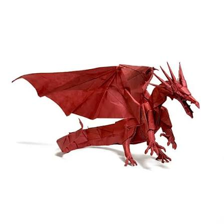
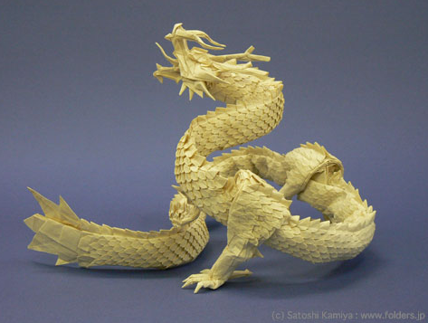

이름:원민식
학교:원주고등학교
관심 분야:과학,소프트웨어
| 게임 이름 | 평가 |
|---|---|
| War Thunder | 육군,해군,공군 모두 플레이 가능한 군사 장비 시뮬레이션 게임 |
| Minecraft | 건축,탐험,등의 창의성과 자유도가 매우 높은 게임 |
| subnautica | 외계 심해 해양 탐사 게임으로 공포의 요소가 좀 많이 들어감 |
| Star Craft | 3가지 종족을 플레이 하며 다양한 전술 전략을 활용하여 플레이 하는 게임 |
종이 접기는 여러장 접기,페이퍼빌드,박스플립,한장종이접기,등이 있는데 저는 박스 플립과 한장 종이접기 기법을 사용합니다.
저는 종이를 접는거 뿐만 아니라 직접 가공(특히 풀먹인 한지:물과 목공풀을 1:1로 섞어 종이에 펴발라 종이의 내구성 강화)하거나 제단,도색까지 합니다


대표적인 유명한 작품 사진 (좌)카미야 사토시-에이션트 드레곤[한장 종이접기]/(우)카미야 사토시-류진3.5[박스플립]
| 종이 | 평가 |
|---|---|
| 풀먹인 한지 | 기본적인 한지에서 직접 가공을 거처 만든 종이.종이가 질겨 잘 안찢기고 종이가 앏아 전문가용으로 적극 추천 |
| 크라프트지 | 한지와 마찬가지로 종이가 잘 안찢어지지만 많이 접다 보면 두꺼워짐.사용하는 색깔의 제한이있다는 단점이 존제한다 |
| 금은지 | 작품을 만들었을때 고정력이 강하지만 종이가 두꺼워지면 잘찢김.하지만 고정력이 다른 종이보다 압도적으로 높아 연습용으로 추천 |
| 일반 색종이 | 종이가 질기지도 않지만 색이 예쁜게 많음.종이접기를 전문으로 할거면 [30 X 30]짜리를 사용하는걸 추천 |
프라모델은 건담이나 밀리터리로 나뉘는데 저는 주로 밀리터리 프라모델을 조립 합니다.밀리터리는 여러색으로 나오는 건담과는 다르게 단색으로 나와서 밀리터리 프라는 도색하는 과정이 매우 중요합니다. 그리하여 조립 뿐만아니라 서페이서/도색/웨더링/데칼순으로 작품이 만들어지고 여기서 더나아가면 디오라마 까지인데 디오라마는 공간 차지와 가격이 매우 많이 나감으로 저는 추천 안합니다.